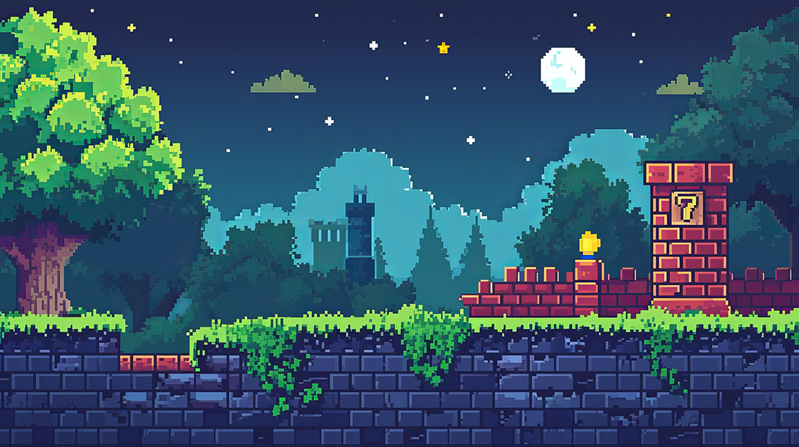

Welcome to my digital den where nostalgia for the golden era of gaming and computing takes center stage! As someone who grew up in the vibrant decades of the eighties and nineties, my earliest and fondest memories are intricately tied to the iconic clicks of the Commodore 64 keyboard, the groundbreaking graphics of the Commodore Amiga, and the exhilarating challenges of arcade games.
This blog is a tribute to the timeless classics that shaped my childhood and continue to influence the gaming world. From the pioneering adventures on the Nintendo NES to epic battles on the Super Nintendo and the thrill of chasing high scores in dimly lit arcade halls, each post dives into the rich history, hidden gems, and personal anecdotes from the days when pixels were a big deal and game manuals were treasured artifacts.
This space isn't just about reminiscing the glory days; it's about reviving them. Here, you'll find deep dives into game mechanics, reviews of retro games, including beloved arcade classics, and discussions about the technological leaps that these systems represented during their time.
Whether you're a fellow aficionado of the era or a newcomer curious about the roots of modern gaming, you'll discover stories, insights, and analyses that celebrate the profound impact of these systems and the arcade culture that brought together passionate gamers. Join me as we explore the intricate world of retro games and computers, rekindling the sparks of the past and appreciating how they paved the way for the innovations we enjoy in gaming today.